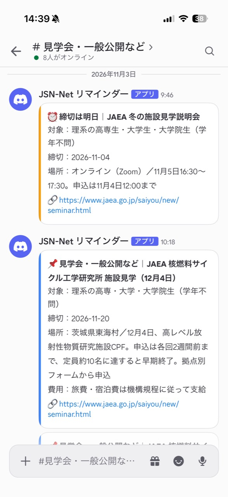

Discord紹介
日常の質問や雑談、募集情報の共有など、学生同士がつながるオンラインの場です。
自分のペースで参加できます
中学生から大学院生まで、原子力に関心のある学生が参加するDiscordサーバーです。専門知識や専攻は問いません。まずは話題を見るだけ、気になることを質問するだけでも歓迎します。
交流と質問
原子力や科学の話題、日々の学びや進路の疑問などを気軽に共有できます。
募集情報と締切リマインダー
見学会・実習・インターンシップ・講演会などの情報を共有し、締切の7日前や1日前などにリマインダーを配信する設定を取り入れています。
募集条件や締切などの最新情報は、主催者の公式案内でもご確認ください。
実際の配信画面
募集の対象・締切・場所・費用・公式案内へのリンクをまとめて確認できます。締切前のお知らせも届きます。

画像は撮影時点の配信例です。最新の募集条件や締切は、各主催者の公式案内をご確認ください。
参加者数の推移
約70人が参加しています。2026年11月19日時点

参加の流れ
ネットワークへの参加費はかかりません。
- 参加申請フォームを送信します。本名・所属などの任意欄は空欄でも参加できます。
- 迷惑投稿を防ぐため、運営が内容を確認してから、入力されたメールアドレスへ招待をご案内します。
- 招待リンクからDiscordへ参加し、サーバー内の案内と利用ルールをご確認ください。
Discordが定める、お住まいの地域の年齢条件などを含む利用規約をご確認ください。
Discordを利用できない方や、参加について相談したい方は、お問い合わせをご利用ください。